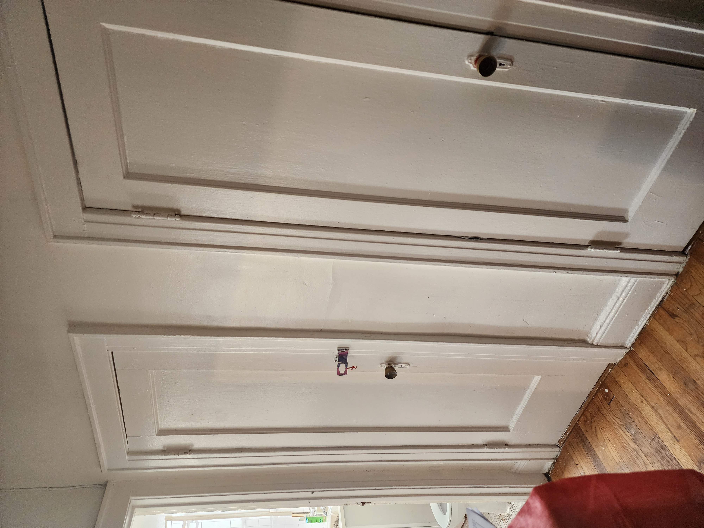
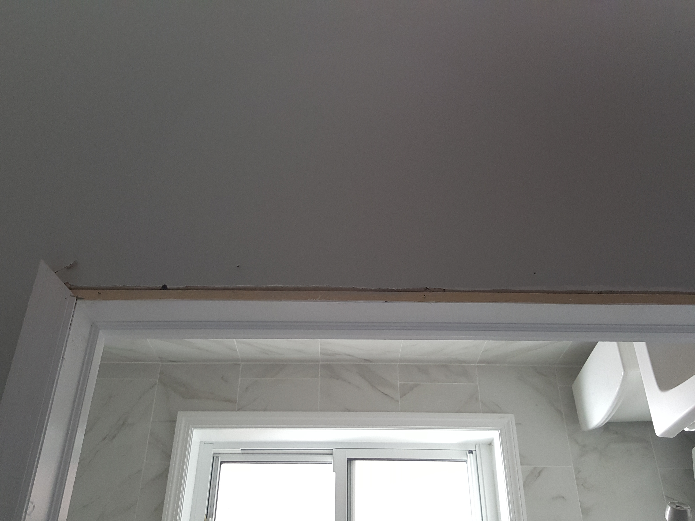
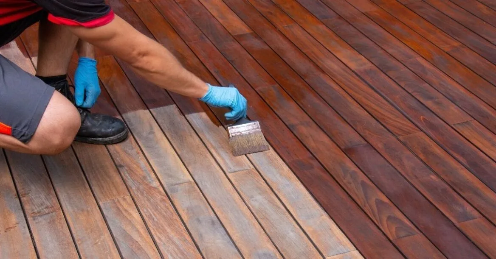
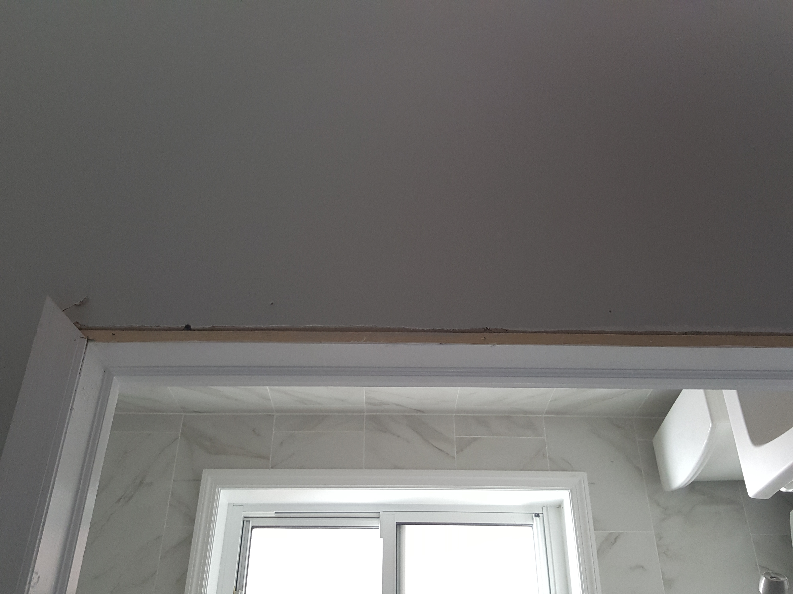
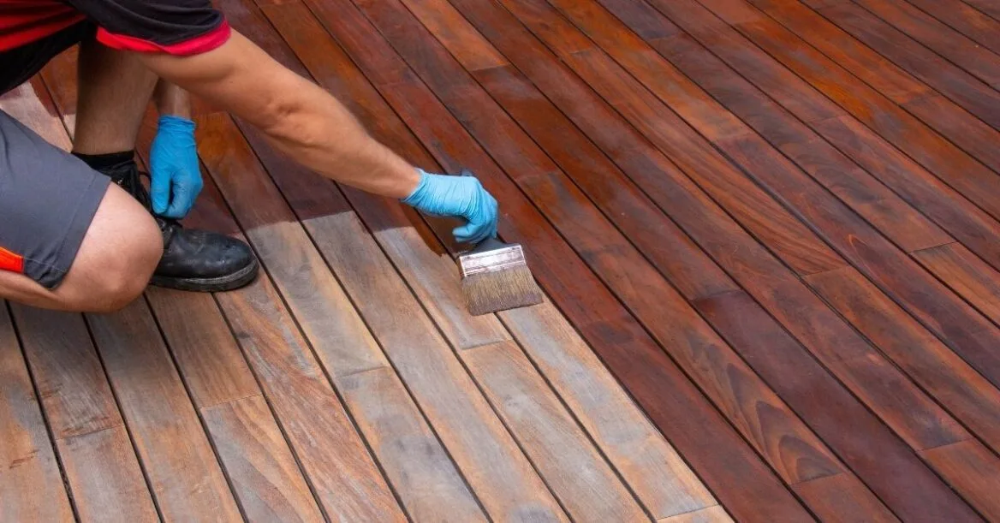
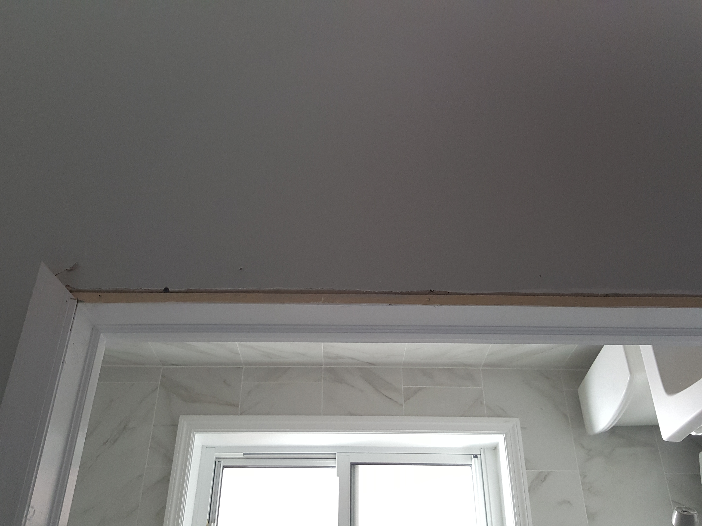
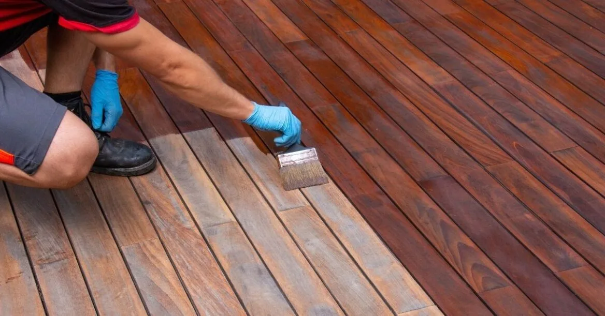

What Is Drywall & Painting?
Drywall and painting services involve installing, repairing, and finishing walls and ceilings, followed by professional painting to achieve a clean and polished look. These services improve the appearance, durability, and value of your home or business.
Why Are Drywall & Painting Important?
- Creates smooth, durable walls and ceilings
- Repairs cracks, holes, or water damage
- Enhances the overall look and feel of interiors
- Protects surfaces with quality paint finishes
- Increases property value and appeal
Steps in a Drywall & Painting Project
- Inspection & Prep: Assess wall condition and prepare surfaces.
- Drywall Installation/Repair: Install new drywall or repair damaged areas.
- Taping & Sanding: Smooth joints and seams for a clean finish.
- Priming & Painting: Apply primer and multiple coats of paint.
- Final Touches: Ensure flawless finishes and clean work areas.
Signs You May Need Drywall & Painting
- Visible cracks, dents, or holes in walls
- Water stains or mold on drywall
- Peeling, fading, or chipped paint
- Desire for a refreshed or modern look
Note: Professional drywall and painting services transform interiors, protect surfaces, and give your home or business a fresh, inviting look.

 



Back to Services

